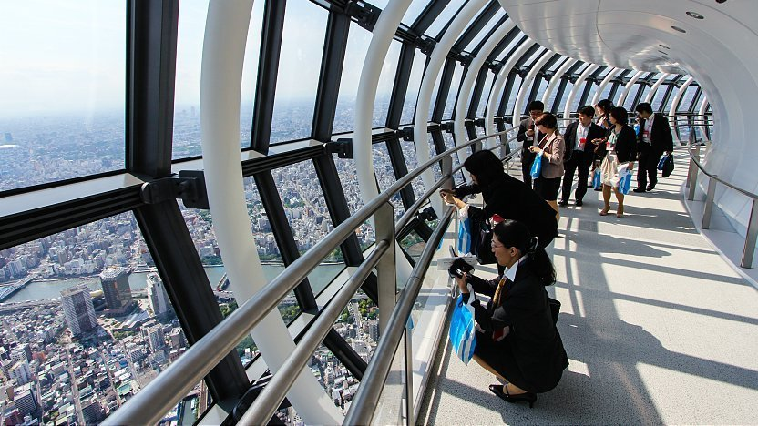
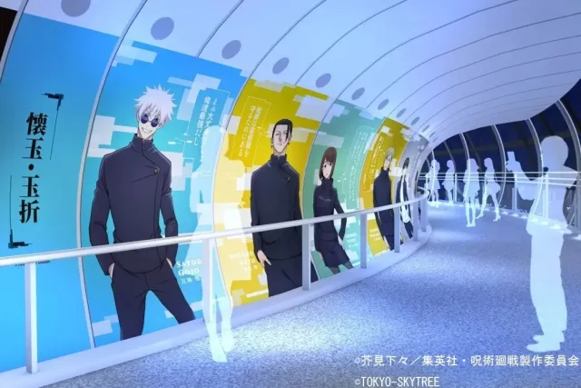

Per una sensazione adrenalinica, prova a camminare lungo il pavimento in vetro del Tembo Deck o sui muri di vetro della Tembo Galleria, per provare l'illusione di levitare a mezz'aria.
La stazione di Tokyo Skytree è raggiungibile dalla linea Tobu Skytree da Asakusa.
Scendendo alla stazione di Tokyo Skytree arriverai direttamente, la Tokyo Skytree Town. Puoi anche prendere le linee Asakusa, Hanzomon o Keisei Oshiage fino alla stazione di Oshiage. In alternativa, il Tokyo Skytree dista 20 minuti a piedi da Asakusa, attraversando il fiume Sumida.
Per chi desidera salire in cima, l'ingresso e i banchi dei biglietti si trovano al 4° piano della Tokyo Skytree Town.
Il Tokyo Skytree, inaugurato nel mese di maggio del 2012, è divenuto rapidamente un importante simbolo di Tokyo, visibile da tanti punti della città. All'epoca del completamento era la torre più alta del mondo ed è ancora la struttura più alta del Paese. Poiché è situato a pochi passi da Asakusa , è possibile combinare facilmente una visita a entrambi e sperimentare gli aspetti tradizionali e moderni dell'architettura giapponese in un pomeriggio.
Sono due gli osservatori aperti al pubblico. La Tembo Deck (a 350 m) e la Tembo Galleria (a 450 m) offrono una vista mozzafiato dalla mattina alla sera, quando la città scintilla come un gioiello. Per una sensazione adrenalinica, prova a camminare lungo il pavimento in vetro del Tembo Deck o sui muri di vetro della Tembo Galleria, per provare l'illusione di levitare a mezz'aria.
Se temi l'altezza, nulla di cui preoccuparti: nelle vicinanze di Tokyo Skytree Town troverai tante altre cose interessanti da vedere. Esplora i 300 negozi e ristoranti del Tokyo Solamachi, molti dei quali vendono articoli a forma di Tokyo Skytree. Non dimenticare di visitare il 4° e il 5° piano, dedicati agli articoli relativi al Giappone, come il tè verde, i coltelli da chef e gli accessori di Hello Kitty. Potrai rilassarti ammirando le vasche dell'acquario Sumida, esplorare lo spazio al Planetario Tenku oppure inviare una cartolina dal Museo Postale con uno speciale timbro che rappresenta il Tokyo Skytree e la data della visita.
